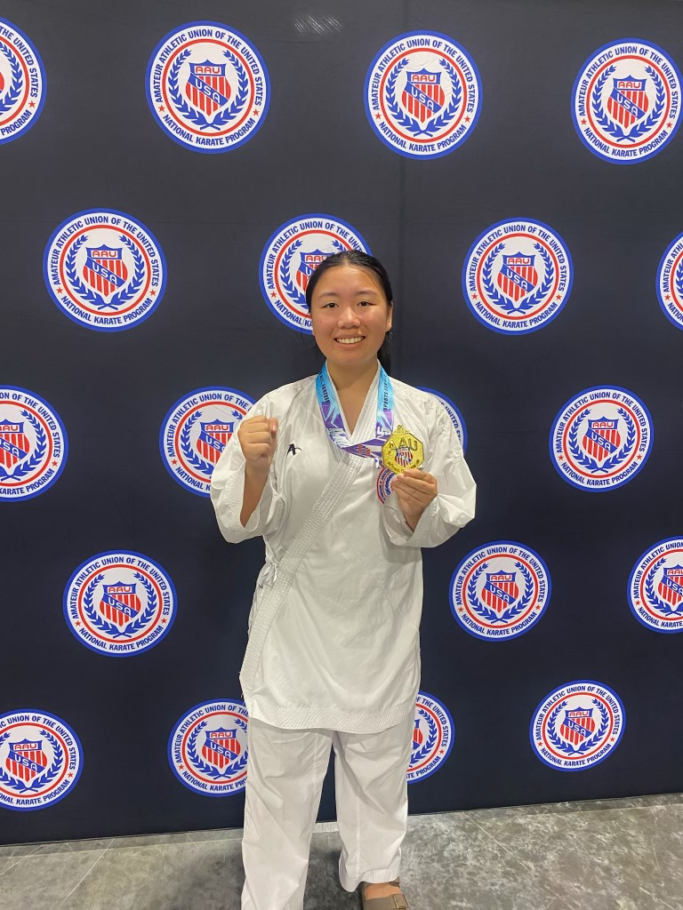

Co-Founder & Karate Athlete
Sophia
Hi, I'm Sophia, and I'm doing this because I care deeply about athlete mental health and the pressure athletes often face that isn't always visible. I want to help bring more awareness to what goes on beyond performance, and contribute to a space where athletes feel supported, understood, and able to speak openly about their experiences.